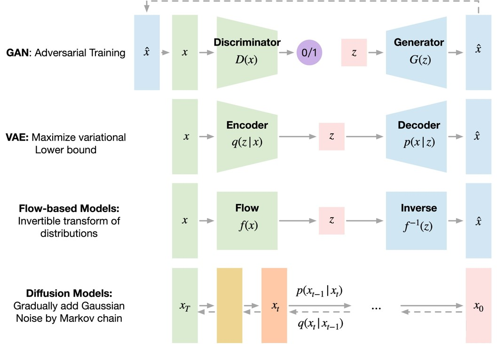
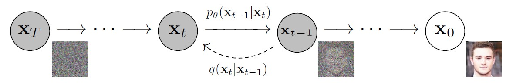

常见的生成模型包含GAN 、VAE 、Flow Models 等等, 所谓生成模型, 就是给一组随机噪声, 通过某种概率模型下的变换, 输出一些具有一定语义信息的数据(比如图像、文本等)。Diffusion Model也是一种生成模型, 2020年DDPM 的发表使得图像生成领域的很多工作都开始转向Diffusion Model。

生成对抗网络 是一种基于深度学习的生成模型，能够生成新内容。GAN采用监督学习方法，使用两个子模型: 从问题域生成新数据的生成器模型 和将数据分类为真实的(来自领域)或假的(生成的)的鉴别器模型 。这两个模型作为竞争对手进行训练。生成器直接产生样本数据，它的对手鉴别器则试图区分从训练数据中提取的样本和从生成器中提取的样本。这个竞争过程在训练中持续进行，直到鉴别器模型有一半以上的时间无法判断真假，这意味着生成器模型正在生成非常逼真的数据。
但是这里每个模型都可以压倒另一个: 如果鉴别器太好，它将返回非常接近0或1的值，生成器则难以获得更新的梯度; 如果生成器太好，它就会利用鉴别器的弱点导致漏报。所以这两个神经网络必须具有通过各自的学习速率达到的相似的“技能水平”，这也是我们常说的GAN难以训练的原因之一。
变分自编码器 是一种生成模型，它“提供潜在空间中观察结果的概率描述”。简单地说，这意味着VAE将潜在属性存储为概率分布。标准的自动编码器包括2个相似的网络，一个编码器 和一个解码器 。编码器接受输入并将其转换为更小的表示形式，解码器可以使用该表示形式将其转换回原始输入。变分自编码器具有连续的潜在空间，这样可以使随机采样和插值更加方便。为了实现这一点，编码器的隐藏节点不输出编码向量，而是输出两个大小相同的向量: 一个均值向量 和一个标准差向量 。每一个隐藏的节点都认为自己是高斯分布的。我们从编码器的输出向量中采样送入解码器, 这个过程就是随机生成。这意味着即使对于相同的输入，当平均值和标准差保持不变时，实际的编码在每一次传递中都会有所不同。
训练过程是最小化重构损失 (输出与输入的相似程度)和潜在损失 (隐藏节点与正态分布的接近程度)。潜在损失越小，可以编码的信息就越少，这样重构损失就会增加，所以在潜在损失和重建损失之间是需要进行进行权衡的。当潜在损耗较小时，生成的图像与训练的的图像会过于相似，效果较差。在重构损失小的情况下，训练时的重构图像效果较好，但生成的新图像与重构图像相差较大，所以需要找到一个好的平衡。
VAE的一个主要缺点是它们生成的输出模糊, 这是由数据分布恢复和损失函数计算的方式造成的。
基于流的生成模型 是精确的对数似然模型，它将一堆可逆变换 应用于来自先验的样本，以便可以计算观察的精确对数似然。与前两种算法不同，该模型显式地学习数据分布，因此损失函数是负对数似然。流模型 f f f x x x z z z 可逆变换 , 它可以是任意的双射函数，并且可以通过叠加各个简单的可逆变换来形成。
流模型可逆但计算效率并不高，基于流的模型生成相同分辨率的图像所需时间是GAN的几倍。
Diffusion Model的灵感来自 non-equilibrium thermodynamics (非平衡热力学) , 理论首先定义扩散步骤的马尔可夫链，缓慢地将随机噪声添加到数据中，然后学习逆向扩散过程以从噪声中构造所需的数据样本。与VAE或流模型不同，扩散模型是通过固定过程学习，并且隐空间具有比较高的维度。
扩散模型(Diffusion Model)用于生成与训练数据相似的数据。从根本上说，Diffusion Model的工作原理是通过连续添加高斯噪声 来破坏训练数据，然后通过学习反转的去噪过程来恢复数据。训练后，我们可以使用 Diffusion Model将随机采样的噪声传入模型中，通过学到的去噪过程来生成数据。
更具体地说，扩散模型是一种隐变量模型(latent variable model)，使用马尔可夫链(Markov Chain)映射到隐空间(latent space)。通过马尔科夫链，在每一个时间步 t t t x i x_i x i
所谓前向过程，即往图片上加噪声的过程。给定图片 x 0 x_0 x 0 T T T x 1 , x 2 , ⋯ , x T x_1, x_2, \cdots, x_T x 1 , x 2 , ⋯ , x T t t t t − 1 t-1 t − 1 马尔科夫过程 , 其数学形式可以写成:
q ( x t ∣ x t − 1 ) = N ( x t ; 1 − β t x t − 1 , β t I ) q(x_t|x_{t-1}) = \mathcal{N}(x_t; \sqrt{1-\beta_t}x_{t-1}, \beta_t\mathbf{I}) q ( x t ∣ x t − 1 ) = N ( x t ; 1 − β t x t − 1 , β t I )
q ( x 1 : T ∣ x 0 ) = ∏ t = 1 T q ( x t ∣ x t − 1 ) = ∏ t = 1 T N ( x t ; 1 − β t x t − 1 , β t I ) q(x_{1:T}|x_0) = \prod_{t=1}^{T}{q(x_t|x_{t-1})} = \prod_{t=1}^{T}{\mathcal{N}(x_t; \sqrt{1-\beta_t}x_{t-1}, \beta_t\mathbf{I})} q ( x 1 : T ∣ x 0 ) = t = 1 ∏ T q ( x t ∣ x t − 1 ) = t = 1 ∏ T N ( x t ; 1 − β t x t − 1 , β t I )
其中 β 1 , ⋯ , β T \beta_1, \cdots, \beta_T β 1 , ⋯ , β T 0.0001 0.0001 0.0001 0.02 0.02 0.02 t t t x t x_t x t T T T N ( 0 , I ) \mathcal{N}(0, \mathbf{I}) N ( 0 , I )
能够通过 x 0 x_0 x 0 β \beta β x t x_t x t α t = 1 − β t \alpha_t = 1 - \beta_t α t = 1 − β t α t ‾ = ∏ i = 1 t α i \overline{\alpha_t} = \prod_{i=1}^{t}{\alpha_i} α t = ∏ i = 1 t α i x t x_t x t
x t = α t x t − 1 + 1 − α t ϵ 1 = α t ( α t − 1 x t − 2 + 1 − α t − 1 ϵ 2 ) + 1 − α t ϵ 1 = α t α t − 1 x t − 2 + ( α t ( 1 − α t − 1 ) ϵ 2 + 1 − α t ϵ 1 ) x_t = \sqrt{\alpha_t}x_{t-1} + \sqrt{1-\alpha_t}\epsilon_1 = \sqrt{\alpha_t}(\sqrt{\alpha_{t-1}}x_{t-2} + \sqrt{1-\alpha_{t-1}}\epsilon_2) + \sqrt{1-\alpha_t}\epsilon_1 = \sqrt{\alpha_t\alpha_{t-1}}x_{t-2} + (\sqrt{\alpha_t(1-\alpha_{t-1})}\epsilon_2 + \sqrt{1-\alpha_t}\epsilon_1) x t = α t x t − 1 + 1 − α t ϵ 1 = α t ( α t − 1 x t − 2 + 1 − α t − 1 ϵ 2 ) + 1 − α t ϵ 1 = α t α t − 1 x t − 2 + ( α t ( 1 − α t − 1 ) ϵ 2 + 1 − α t ϵ 1 )
其中 ϵ 1 , ϵ 2 ∼ N ( 0 , I ) \epsilon_1, \epsilon_2 \sim \mathcal{N}(0, \mathbf{I}) ϵ 1 , ϵ 2 ∼ N ( 0 , I ) N ( 0 , σ 1 2 I ) + N ( 0 , σ 2 2 I ) ∼ N ( 0 , ( σ 1 2 + σ 2 2 ) I ) \mathcal{N}(0, \sigma_1^2\mathbf{I}) + \mathcal{N}(0, \sigma_2^2\mathbf{I}) \sim \mathcal{N}(0, (\sigma_1^2+\sigma_2^2)\mathbf{I}) N ( 0 , σ 1 2 I ) + N ( 0 , σ 2 2 I ) ∼ N ( 0 , ( σ 1 2 + σ 2 2 ) I )
x t = α t α t − 1 x t − 2 + 1 − α t α t − 1 ϵ 2 ‾ ( ϵ 2 ‾ ∼ N ( 0 , I ) ) x_t = \sqrt{\alpha_t\alpha_{t-1}}x_{t-2} + \sqrt{1-\alpha_t\alpha_{t-1}}\overline{\epsilon_2} \qquad (\overline{\epsilon_2} \sim \mathcal{N}(0, \mathbf{I})) x t = α t α t − 1 x t − 2 + 1 − α t α t − 1 ϵ 2 ( ϵ 2 ∼ N ( 0 , I ))
依次展开, 可以得到:
x t = α t ‾ x 0 + 1 − α t ‾ ϵ t ‾ ( ϵ t ‾ ∼ N ( 0 , I ) ) x_t = \sqrt{\overline{\alpha_t}}\ x_0 + \sqrt{1-\overline{\alpha_t}}\ \overline{\epsilon_t} \qquad (\overline{\epsilon_t} \sim \mathcal{N}(0, \mathbf{I})) x t = α t x 0 + 1 − α t ϵ t ( ϵ t ∼ N ( 0 , I ))
因此，任意时刻 x t x_t x t q ( x t ∣ x 0 ) = N ( x t ; α t ‾ x 0 , ( 1 − α t ‾ ) I ) q(x_t | x_0) = \mathcal{N}(x_t; \sqrt{\overline{\alpha_t}}x_0, (1-\overline{\alpha_t})\mathbf{I}) q ( x t ∣ x 0 ) = N ( x t ; α t x 0 , ( 1 − α t ) I )
如果说前向过程(forward)是加噪 的过程，那么逆向过程(reverse)就是diffusion的去噪 推断过程。如果我们能够逐步得到逆转后的分布 q ( x t − 1 ∣ x t ) q(x_{t-1}|x_t) q ( x t − 1 ∣ x t ) N ( 0 , I ) \mathcal{N}(0, \mathbf{I}) N ( 0 , I ) x 0 x_0 x 0

但实际上 q ( x t − 1 ∣ x t ) q(x_{t-1}|x_t) q ( x t − 1 ∣ x t ) p θ ( x t − 1 ∣ x t ) p_\theta(x_{t-1}|x_t) p θ ( x t − 1 ∣ x t ) θ \theta θ
p θ ( x t − 1 ∣ x t ) = N ( x t − 1 ; μ θ ( x t , t ) , σ θ 2 ( x t , t ) I ) p_\theta(x_{t-1}|x_t) = \mathcal{N}(x_{t-1}; \mu_\theta(x_t, t), \sigma_\theta^2(x_t, t)\mathbf{I}) p θ ( x t − 1 ∣ x t ) = N ( x t − 1 ; μ θ ( x t , t ) , σ θ 2 ( x t , t ) I )
p θ ( x 0 : T ) = p ( x T ) ∏ t = T 1 p θ ( x t − 1 ∣ x t ) = p ( x T ) ∏ t = T 1 N ( x t − 1 ; μ θ ( x t , t ) , σ θ 2 ( x t , t ) I ) p_\theta(x_{0:T}) = p(x_T)\prod_{t=T}^{1}{p_\theta(x_{t-1}|x_t)} = p(x_T)\prod_{t=T}^{1}{\mathcal{N}(x_{t-1}; \mu_\theta(x_t, t), \sigma_\theta^2(x_t, t)\mathbf{I})} p θ ( x 0 : T ) = p ( x T ) t = T ∏ 1 p θ ( x t − 1 ∣ x t ) = p ( x T ) t = T ∏ 1 N ( x t − 1 ; μ θ ( x t , t ) , σ θ 2 ( x t , t ) I )
训练过程就是学习上面公式中的 μ θ ( x t , t ) \mu_\theta(x_t, t) μ θ ( x t , t ) σ θ ( x t , t ) \sigma_\theta(x_t, t) σ θ ( x t , t ) q ( x t − 1 ∣ x t ) q(x_{t-1}|x_t) q ( x t − 1 ∣ x t ) x 0 x_0 x 0 q ( x t − 1 ∣ x t , x 0 ) q(x_{t-1}|x_t, x_0) q ( x t − 1 ∣ x t , x 0 )
q ( x t − 1 ∣ x t , x 0 ) = q ( x t ∣ x t − 1 , x 0 ) q ( x t − 1 ∣ x 0 ) q ( x t ∣ x 0 ) = q ( x t ∣ x t − 1 ) q ( x t − 1 ∣ x 0 ) q ( x t ∣ x 0 ) q(x_{t-1}|x_t, x_0) = q(x_t|x_{t-1}, x_0)\frac{q(x_{t-1}|x_0)}{q({x_t|x_0})} = q(x_t|x_{t-1})\frac{q(x_{t-1}|x_0)}{q({x_t|x_0})} q ( x t − 1 ∣ x t , x 0 ) = q ( x t ∣ x t − 1 , x 0 ) q ( x t ∣ x 0 ) q ( x t − 1 ∣ x 0 ) = q ( x t ∣ x t − 1 ) q ( x t ∣ x 0 ) q ( x t − 1 ∣ x 0 )
这样就将后验概率转化为了已知的先验概率，代入前面推导的公式:
q ( x t ∣ x t − 1 ) ∝ exp ( − ( x t − α t x t − 1 ) 2 2 ( 1 − α t ) ) q(x_t|x_{t-1}) \propto \exp{\left(-\frac{(x_t-\sqrt{\alpha_t}x_{t-1})^2}{2(1-\alpha_t)}\right)} q ( x t ∣ x t − 1 ) ∝ exp ( − 2 ( 1 − α t ) ( x t − α t x t − 1 ) 2 )
q ( x t − 1 ∣ x 0 ) ∝ exp ( − ( x t − 1 − α t − 1 ‾ x 0 ) 2 2 ( 1 − α t − 1 ‾ ) ) q(x_{t-1}|x_0) \propto \exp{\left(-\frac{(x_{t-1}-\sqrt{\overline{\alpha_{t-1}}}x_0)^2}{2(1-\overline{\alpha_{t-1}})}\right)} q ( x t − 1 ∣ x 0 ) ∝ exp ( − 2 ( 1 − α t − 1 ) ( x t − 1 − α t − 1 x 0 ) 2 )
q ( x t ∣ x 0 ) ∝ exp ( − ( x t − α t ‾ x 0 ) 2 2 ( 1 − α t ‾ ) ) q(x_t|x_0) \propto \exp{\left(-\frac{(x_t-\sqrt{\overline{\alpha_t}}x_0)^2}{2(1-\overline{\alpha_t})}\right)} q ( x t ∣ x 0 ) ∝ exp ( − 2 ( 1 − α t ) ( x t − α t x 0 ) 2 )
整理可以得到:
q ( x t − 1 ∣ x t , x 0 ) = N ( x t − 1 ; μ ~ t − 1 ( x t ) , β ~ t − 1 I ) q(x_{t-1}|x_t, x_0) = \mathcal{N}(x_{t-1};\tilde{\mu}_{t-1}(x_t), \tilde{\beta}_{t-1}\mathbf{I}) q ( x t − 1 ∣ x t , x 0 ) = N ( x t − 1 ; μ ~ t − 1 ( x t ) , β ~ t − 1 I )
其中:
μ ~ t − 1 ( x t ) = α t ( 1 − α t − 1 ‾ ) 1 − α t ‾ x t + α t − 1 ‾ β t 1 − α t ‾ x 0 = 1 α t ( x t − β t 1 − α t ‾ ϵ t ‾ ) \tilde{\mu}_{t-1}(x_t) = \frac{\sqrt{\alpha_t}(1-\overline{\alpha_{t-1}})}{1-\overline{\alpha_t}}x_t + \frac{\sqrt{\overline{\alpha_{t-1}}}\beta_t}{1-\overline{\alpha_t}}x_0 = \frac{1}{\sqrt{\alpha_t}}(x_t - \frac{\beta_t}{\sqrt{1-\overline{\alpha_t}}}\overline{\epsilon_t}) μ ~ t − 1 ( x t ) = 1 − α t α t ( 1 − α t − 1 ) x t + 1 − α t α t − 1 β t x 0 = α t 1 ( x t − 1 − α t β t ϵ t )
β ~ t − 1 = 1 − α t − 1 ‾ 1 − α t ‾ β t ≈ β t \tilde{\beta}_{t-1} = \frac{1-\overline{\alpha_{t-1}}}{1-\overline{\alpha_t}}\beta_t \approx \beta_t β ~ t − 1 = 1 − α t 1 − α t − 1 β t ≈ β t
以上推导的 μ ~ t − 1 ( x t ) \tilde\mu_{t-1}(x_t) μ ~ t − 1 ( x t ) ground truth, 而我们将通过神经网络学习到 μ θ ( x t , t ) \mu_\theta(x_t, t) μ θ ( x t , t ) ϵ θ ( x t , t ) \epsilon_\theta(x_t, t) ϵ θ ( x t , t )
μ θ ( x t , t ) = 1 α t ( x t − β t 1 − α t ‾ ϵ θ ( x t , t ) ) \mu_\theta(x_t, t) = \frac{1}{\sqrt{\alpha_t}}(x_t - \frac{\beta_t}{\sqrt{1-\overline{\alpha_t}}}\epsilon_\theta(x_t, t)) μ θ ( x t , t ) = α t 1 ( x t − 1 − α t β t ϵ θ ( x t , t ))
因此模型预测的 x t − 1 x_{t-1} x t − 1
x t − 1 ( x t , t ; θ ) = 1 α t ( x t − β t 1 − α t ‾ ϵ θ ( x t , t ) ) + σ θ ( x t , t ) z z ∼ N ( 0 , I ) x_{t-1}(x_{t}, t; \theta) = \frac{1}{\sqrt{\alpha_t}}(x_t - \frac{\beta_t}{\sqrt{1-\overline{\alpha_t}}}\epsilon_\theta(x_t, t)) + \sigma_\theta(x_t, t)z \qquad z \sim \mathcal{N}(0, \mathbf{I}) x t − 1 ( x t , t ; θ ) = α t 1 ( x t − 1 − α t β t ϵ θ ( x t , t )) + σ θ ( x t , t ) z z ∼ N ( 0 , I )
训练过程就是学习上面公式中的 μ θ ( x t , t ) \mu_\theta(x_t, t) μ θ ( x t , t ) σ θ ( x t , t ) \sigma_\theta(x_t, t) σ θ ( x t , t ) ϵ θ ( x t , t ) \epsilon_\theta(x_t, t) ϵ θ ( x t , t )
L = E q ( x 0 ) [ − log p θ ( x 0 ) ] \mathcal{L} = \mathbb{E}_{q(x_0)}[-\log p_\theta(x_0)] L = E q ( x 0 ) [ − log p θ ( x 0 )]
求模型的极大似然估计，等同于求解最小化负对数似然的变分上限 L v l b \mathcal{L}_{vlb} L v l b
L = E q ( x 0 ) [ − log p θ ( x 0 ) ] ≤ E q ( x 0 : T ) [ log q ( x 1 : T ∣ x 0 ) p θ ( x 0 : T ) ] : = L v l b \mathcal{L} = \mathbb{E}_{q(x_0)}[-\log p_\theta(x_0)] \leq \mathbb{E}_{q(x_{0\ :\ T})}\left[\log\frac{q(x_{1:T}|x_0)}{p_\theta(x_{0:T})}\right] := \mathcal{L}_{vlb} L = E q ( x 0 ) [ − log p θ ( x 0 )] ≤ E q ( x 0 : T ) [ log p θ ( x 0 : T ) q ( x 1 : T ∣ x 0 ) ] := L v l b
进一步表示为KL散度(KL散度是一种不对称统计距离度量，用于衡量一个概率分布P与另外一个概率分布Q的差异程度):
L v l b = E q ( x 0 : T ) [ log q ( x 1 : T ∣ x 0 ) p θ ( x 0 : T ) ] = E q ( x 0 : T ) [ log ( ∏ t = 1 T q ( x t ∣ x t − 1 ) ) / ( p θ ( x T ) ∏ t = 1 T p θ ( x t − 1 ∣ x t ) ) ] \mathcal{L}_{vlb} = \mathbb{E}_{q(x_{0\ :\ T})}\left[\log\frac{q(x_{1:T}|x_0)}{p_\theta(x_{0:T})}\right] = \mathbb{E}_{q(x_{0\ :\ T})}\left[\log \left(\prod_{t=1}^{T}{q(x_t|x_{t-1})}\right) / \left(p_\theta(x_T)\prod_{t=1}^{T}{p_\theta(x_{t-1}|x_t)}\right)\right] L v l b = E q ( x 0 : T ) [ log p θ ( x 0 : T ) q ( x 1 : T ∣ x 0 ) ] = E q ( x 0 : T ) [ log ( t = 1 ∏ T q ( x t ∣ x t − 1 ) ) / ( p θ ( x T ) t = 1 ∏ T p θ ( x t − 1 ∣ x t ) ) ]
= E q ( x 0 : T ) [ − log p θ ( x T ) + ∑ t = 1 T log q ( x t ∣ x t − 1 ) p θ ( x t − 1 ∣ x t ) ] = \mathbb{E}_{q(x_{0\ :\ T})}\left[-\log p_\theta(x_T) + \sum_{t=1}^{T}{\log \frac{q(x_t|x_{t-1})}{p_\theta(x_{t-1}|x_t)}}\right] \qquad\qquad\qquad\qquad\qquad\qquad\qquad\qquad = E q ( x 0 : T ) [ − log p θ ( x T ) + t = 1 ∑ T log p θ ( x t − 1 ∣ x t ) q ( x t ∣ x t − 1 ) ]
= E q ( x 0 : T ) [ − log p θ ( x T ) + ∑ t = 2 T log ( q ( x t − 1 ∣ x t , x 0 ) p θ ( x t − 1 ∣ x t ) q ( x t ∣ x 0 ) q ( x t − 1 ∣ x 0 ) ) + log q ( x 1 ∣ x 0 ) p θ ( x 0 ∣ x 1 ) ] = \mathbb{E}_{q(x_{0\ :\ T})}\left[-\log p_\theta(x_T) + \sum_{t=2}^{T}{\log \left(\frac{q(x_{t-1}|x_t, x_0)}{p_\theta(x_{t-1}|x_t)} \frac{q(x_t|x_0)}{q(x_{t-1}|x_0)} \right)} + \log \frac{q(x_1|x_0)}{p_\theta(x_0|x_1)} \right] \quad = E q ( x 0 : T ) [ − log p θ ( x T ) + t = 2 ∑ T log ( p θ ( x t − 1 ∣ x t ) q ( x t − 1 ∣ x t , x 0 ) q ( x t − 1 ∣ x 0 ) q ( x t ∣ x 0 ) ) + log p θ ( x 0 ∣ x 1 ) q ( x 1 ∣ x 0 ) ]
= E q ( x 0 : T ) [ − log p θ ( x T ) + ∑ t = 2 T log q ( x t − 1 ∣ x t , x 0 ) p θ ( x t − 1 ∣ x t ) + ∑ t = 2 T log q ( x t ∣ x 0 ) q ( x t − 1 ∣ x 0 ) + log q ( x 1 ∣ x 0 ) p θ ( x 0 ∣ x 1 ) ] \quad = \mathbb{E}_{q(x_{0\ :\ T})}\left[-\log p_\theta(x_T) + \sum_{t=2}^{T}{\log \frac{q(x_{t-1}|x_t, x_0)}{p_\theta(x_{t-1}|x_t)}} +\sum_{t=2}^{T}{\log \frac{q(x_t|x_0)}{q(x_{t-1}|x_0)}} + \log \frac{q(x_1|x_0)}{p_\theta(x_0|x_1)} \right] = E q ( x 0 : T ) [ − log p θ ( x T ) + t = 2 ∑ T log p θ ( x t − 1 ∣ x t ) q ( x t − 1 ∣ x t , x 0 ) + t = 2 ∑ T log q ( x t − 1 ∣ x 0 ) q ( x t ∣ x 0 ) + log p θ ( x 0 ∣ x 1 ) q ( x 1 ∣ x 0 ) ]
= E q ( x 0 : T ) [ − log p θ ( x T ) + ∑ t = 2 T log q ( x t − 1 ∣ x t , x 0 ) p θ ( x t − 1 ∣ x t ) + log q ( x T ∣ x 0 ) q ( x 1 ∣ x 0 ) + log q ( x 1 ∣ x 0 ) p θ ( x 0 ∣ x 1 ) ] = \mathbb{E}_{q(x_{0\ :\ T})}\left[-\log p_\theta(x_T) + \sum_{t=2}^{T}{\log \frac{q(x_{t-1}|x_t, x_0)}{p_\theta(x_{t-1}|x_t)}} + \log \frac{q(x_T|x_0)}{q(x_1|x_0)} + \log \frac{q(x_1|x_0)}{p_\theta(x_0|x_1)} \right]\quad = E q ( x 0 : T ) [ − log p θ ( x T ) + t = 2 ∑ T log p θ ( x t − 1 ∣ x t ) q ( x t − 1 ∣ x t , x 0 ) + log q ( x 1 ∣ x 0 ) q ( x T ∣ x 0 ) + log p θ ( x 0 ∣ x 1 ) q ( x 1 ∣ x 0 ) ]
= E q ( x 0 : T ) [ log q ( x T ∣ x 0 ) p θ ( x T ) + ∑ t = 2 T log q ( x t − 1 ∣ x t , x 0 ) p θ ( x t − 1 ∣ x t ) − log p θ ( x 0 ∣ x 1 ) ] = \mathbb{E}_{q(x_{0\ :\ T})}\left[\log \frac{q(x_T|x_0)}{p_\theta(x_T)} + \sum_{t=2}^{T}{\log \frac{q(x_{t-1}|x_t, x_0)}{p_\theta(x_{t-1}|x_t)}} - \log p_\theta(x_0|x_1)\right] \qquad\qquad\qquad\qquad = E q ( x 0 : T ) [ log p θ ( x T ) q ( x T ∣ x 0 ) + t = 2 ∑ T log p θ ( x t − 1 ∣ x t ) q ( x t − 1 ∣ x t , x 0 ) − log p θ ( x 0 ∣ x 1 ) ]
由于前向 q q q x T x_T x T
L v l b = E q ( x 0 : T ) [ ∑ t = 1 T log q ( x t − 1 ∣ x t , x 0 ) p θ ( x t − 1 ∣ x t ) ] + C : = ∑ t = 1 T L t + C \mathcal{L}_{vlb} = \mathbb{E}_{q(x_{0\ :\ T})}\left[\sum_{t=1}^{T}{\log \frac{q(x_{t-1}|x_t, x_0)}{p_\theta(x_{t-1}|x_t)}}\right] + C := \sum_{t=1}^{T}{\mathcal{L}_t}+C L v l b = E q ( x 0 : T ) [ t = 1 ∑ T log p θ ( x t − 1 ∣ x t ) q ( x t − 1 ∣ x t , x 0 ) ] + C := t = 1 ∑ T L t + C
L t \mathcal{L}_t L t 多元高斯分布的KL散度求解公式 :
L t = E q ( x 0 : T ) [ ∣ ∣ μ t ~ ( x t ) − μ θ ( x t , t ) ∣ ∣ 2 2 ∣ ∣ σ θ 2 ( x t , t ) I ∣ ∣ 2 ] + C ′ \mathcal{L}_t = \mathbb{E}_{q(x_{0\ :\ T})}\left[ \frac{||\tilde{\mu_t}(x_t)-\mu_\theta(x_t, t)||^2}{2||\sigma_\theta^2(x_t, t)\mathbf{I}||^2} \right] + C^\prime L t = E q ( x 0 : T ) [ 2∣∣ σ θ 2 ( x t , t ) I ∣ ∣ 2 ∣∣ μ t ~ ( x t ) − μ θ ( x t , t ) ∣ ∣ 2 ] + C ′
代入上面推导的 μ t ~ \tilde{\mu_t} μ t ~ μ θ \mu_\theta μ θ
L t s i m p l e = E x 0 , t , ϵ [ ∣ ∣ ϵ − ϵ θ ( α t ‾ x 0 + 1 − α t ‾ ϵ , t ) ∣ ∣ 2 ] \mathcal{L}_t^{simple} = \mathbb{E}_{x_0, t, \epsilon}\left[||\epsilon-\epsilon_\theta(\sqrt{\overline{\alpha_t}}x_0+\sqrt{1-\overline{\alpha_t}}\epsilon, t)||^2 \right] L t s im pl e = E x 0 , t , ϵ [ ∣∣ ϵ − ϵ θ ( α t x 0 + 1 − α t ϵ , t ) ∣ ∣ 2 ]
训练的核心就是最小化模型预测噪声 ϵ θ \epsilon_\theta ϵ θ ϵ \epsilon ϵ
x0 = get_data( )
epsilon = torch. randn_like( x0. shape)
t = torch. randint( )
x = x0 * torch. sqrt( alpha_bar[ t] ) + epsilon * torch. sqrt( 1 - alpha_bar[ t] )
output = model( x)
loss = torch. norm( e - output) ** 2
loss. backward( )
采样过程就是所谓的推断过程，给定一个噪声图片 x T x_T x T
p θ ( x t − 1 ∣ x t ) = N ( x t − 1 ; μ θ ( x t , t ) , σ θ 2 ( x t , t ) I ) ∼ 1 α t ( x t − β t 1 − α t ‾ ϵ θ ( x t , t ) ) + σ θ ( x t , t ) z ( z ∼ N ( 0 , I ) ) p_\theta(x_{t-1}|x_t) = \mathcal{N}(x_{t-1}; \mu_\theta(x_t, t), \sigma_\theta^2(x_t, t)\mathbf{I}) \sim \frac{1}{\sqrt{\alpha_t}}(x_t - \frac{\beta_t}{\sqrt{1-\overline{\alpha_t}}}\epsilon_\theta(x_t, t)) + \sigma_\theta(x_t, t)z \qquad (z \sim \mathcal{N}(0, \mathbf{I})) p θ ( x t − 1 ∣ x t ) = N ( x t − 1 ; μ θ ( x t , t ) , σ θ 2 ( x t , t ) I ) ∼ α t 1 ( x t − 1 − α t β t ϵ θ ( x t , t )) + σ θ ( x t , t ) z ( z ∼ N ( 0 , I ))
从 t = T t=T t = T x 0 x_0 x 0 β t ≈ σ θ 2 ( x t , t ) \beta_t \approx \sigma_\theta^2(x_t, t) β t ≈ σ θ 2 ( x t , t )
x_T = torch, randn_like( x0. shape)
for t in range ( T, 0 , - 1 ) :
e = model( x_T, t)
mu = 1 / torch. sqrt( alpha_bar[ t] ) * ( x_T - beta[ t] / torch. sqrt( 1 - alpha_bar[ t] ) * e)
sigma = torch. sqrt( beta[ t] )
x_T = mu + sigma * torch. randn_like( x0. shape)
return x_T
作为生成模型，扩散模型跟VAE、GAN、flow等模型的发展史很相似，都是先出来了无条件生成，然后有条件生成就紧接而来。无条件生成往往是为了探索效果上限，而有条件生成则更多是应用层面的内容，因为它可以实现根据我们的意愿来控制输出结果。
从方法上来看，条件控制生成的方式分两种：事后修改(Classifier-Guidance)和 事前训练(Classifier-Free) 。对于大多数人来说，一个SOTA级别的扩散模型训练成本太大了，而分类器（Classifier）的训练还能接受，所以就想着直接复用别人训练好的无条件扩散模型，用一个分类器来调整生成过程以实现控制生成，这就是事后修改的Classifier-Guidance方案；而对于“财大气粗”的Google、OpenAI等公司来说，它们不缺数据和算力，所以更倾向于往扩散模型的训练过程中就加入条件信号，达到更好的生成效果，这就是事前训练的Classifier-Free方案。
Classifier-Guidance方案最早出自《Diffusion Models Beat GANs on Image Synthesis》 ，最初就是用来实现按类生成; 后来《More Control for Free! Image Synthesis with Semantic Diffusion Guidance》 推广了 “Classifier” 的概念，使得它也可以按图、按文来生成。Classifier-Guidance方案的训练成本比较低，但是推断成本会高些，而且控制细节上通常没那么到位。
至于Classifier-Free方案，最早出自《Classifier-Free Diffusion Guidance》 ，后来的Imagen 等吸引人眼球的模型基本上都是以它为基础做的。应该说，Classifier-Free方案本身没什么理论上的技巧，它是条件扩散模型最朴素的方案，出现得晚只是因为重新训练扩散模型的成本较大吧。在数据和算力都比较充裕的前提下，Classifier-Free方案表现出了令人惊叹的细节控制能力。
这一方案是在已经训练好的diffusion model上额外添加一个分类器 p ϕ ( y ∣ x t ) p_\phi(y|x_t) p ϕ ( y ∣ x t ) y y y ϕ \phi ϕ x t x_t x t
无条件生成过程可以表述为 p θ ( x t − 1 ∣ x t ) p_\theta(x_{t-1}|x_t) p θ ( x t − 1 ∣ x t ) y y y p θ , ϕ ( x t − 1 ∣ x t , y ) p_{\theta,\phi}(x_{t-1}|x_t, y) p θ , ϕ ( x t − 1 ∣ x t , y )
p θ , ϕ ( x t − 1 ∣ x t , y ) = p θ ( x t − 1 ∣ x t ) p ϕ ( y ∣ x t − 1 , x t ) p ϕ ( y ∣ x t ) p_{\theta,\phi}(x_{t-1}|x_t, y) = \frac{p_\theta(x_{t-1}|x_t)p_\phi(y|x_{t-1},x_t)}{p_\phi(y|x_t)} p θ , ϕ ( x t − 1 ∣ x t , y ) = p ϕ ( y ∣ x t ) p θ ( x t − 1 ∣ x t ) p ϕ ( y ∣ x t − 1 , x t )
由于 x t x_t x t x t − 1 x_{t-1} x t − 1 p ϕ ( y ∣ x t − 1 , x t ) = p ϕ ( y ∣ x t − 1 ) p_\phi(y|x_{t-1},x_t) = p_\phi(y|x_{t-1}) p ϕ ( y ∣ x t − 1 , x t ) = p ϕ ( y ∣ x t − 1 )
p θ , ϕ ( x t − 1 ∣ x t , y ) = p θ ( x t − 1 ∣ x t ) p ϕ ( y ∣ x t − 1 ) p ϕ ( y ∣ x t ) = p θ ( x t − 1 ∣ x t ) e log p ϕ ( y ∣ x t − 1 ) − log p ϕ ( y ∣ x t ) p_{\theta,\phi}(x_{t-1}|x_t, y) = p_\theta(x_{t-1}|x_t)\frac{p_\phi(y|x_{t-1})}{p_\phi(y|x_t)} = p_\theta(x_{t-1}|x_t)e^{\log p_\phi(y|x_{t-1}) - \log p_\phi(y|x_t)} p θ , ϕ ( x t − 1 ∣ x t , y ) = p θ ( x t − 1 ∣ x t ) p ϕ ( y ∣ x t ) p ϕ ( y ∣ x t − 1 ) = p θ ( x t − 1 ∣ x t ) e l o g p ϕ ( y ∣ x t − 1 ) − l o g p ϕ ( y ∣ x t )
当 T T T x t − 1 x_{t-1} x t − 1 x t x_t x t p ϕ ( y ∣ x t − 1 ) p_\phi(y|x_{t-1}) p ϕ ( y ∣ x t − 1 ) p ϕ ( y ∣ x t ) p_\phi(y|x_t) p ϕ ( y ∣ x t )
log p ϕ ( y ∣ x t − 1 ) − log p ϕ ( y ∣ x t ) ≈ ( x t − 1 − x t ) ∇ x t log p ϕ ( y ∣ x t ) ≈ ( x t − 1 − μ θ ( x t , t ) ) ∇ x t log p ϕ ( y ∣ x t ) \log p_\phi(y|x_{t-1}) - \log p_\phi(y|x_t) \approx (x_{t-1} - x_t) \nabla_{x_t} \log p_\phi(y|x_t) \approx (x_{t-1} - \mu_\theta(x_t,t)) \nabla_{x_t} \log p_\phi(y|x_t) log p ϕ ( y ∣ x t − 1 ) − log p ϕ ( y ∣ x t ) ≈ ( x t − 1 − x t ) ∇ x t log p ϕ ( y ∣ x t ) ≈ ( x t − 1 − μ θ ( x t , t )) ∇ x t log p ϕ ( y ∣ x t )
由于 p θ ( x t − 1 ∣ x t ) ∼ N ( x t ; μ θ ( x t , t ) , σ θ 2 ( x t , t ) I ) ∝ exp ( − ( x t − μ θ ( x t , t ) ) 2 2 σ θ 2 ( x t , t ) ) p_\theta(x_{t-1}|x_t) \sim \mathcal{N}(x_t; \mu_\theta(x_t, t), \sigma_\theta^2(x_t, t)\mathbf{I}) \propto \exp \left( - \frac{(x_t - \mu_\theta(x_t, t))^2}{2\sigma_\theta^2(x_t, t)} \right) p θ ( x t − 1 ∣ x t ) ∼ N ( x t ; μ θ ( x t , t ) , σ θ 2 ( x t , t ) I ) ∝ exp ( − 2 σ θ 2 ( x t , t ) ( x t − μ θ ( x t , t ) ) 2 )
p θ , ϕ ( x t − 1 ∣ x t , y ) ∝ exp ( − ( x t − μ θ ( x t , t ) ) 2 2 σ θ 2 ( x t , t ) + ( x t − 1 − μ θ ( x t , t ) ) ∇ x t log p ϕ ( y ∣ x t ) ) ∝ exp ( − ( x t − μ θ ( x t , t ) − σ θ 2 ( x t , t ) ∇ x t log p ϕ ( y ∣ x t ) ) 2 2 σ θ 2 ( x t , t ) ) p_{\theta,\phi}(x_{t-1}|x_t, y) \propto \exp \left( - \frac{(x_t - \mu_\theta(x_t, t))^2}{2\sigma_\theta^2(x_t, t)} + (x_{t-1} - \mu_\theta(x_t,t)) \nabla_{x_t} \log p_\phi(y|x_t) \right) \propto \exp \left( - \frac{(x_t - \mu_\theta(x_t, t) - \sigma_\theta^2(x_t, t)\nabla_{x_t} \log p_\phi(y|x_t) )^2}{2\sigma_\theta^2(x_t, t)}\right) p θ , ϕ ( x t − 1 ∣ x t , y ) ∝ exp ( − 2 σ θ 2 ( x t , t ) ( x t − μ θ ( x t , t ) ) 2 + ( x t − 1 − μ θ ( x t , t )) ∇ x t log p ϕ ( y ∣ x t ) ) ∝ exp ( − 2 σ θ 2 ( x t , t ) ( x t − μ θ ( x t , t ) − σ θ 2 ( x t , t ) ∇ x t log p ϕ ( y ∣ x t ) ) 2 )
也即:
p θ , ϕ ( x t − 1 ∣ x t , y ) = N ( x t ; μ θ ( x t , t ) + σ θ 2 ( x t , t ) ∇ x t log p ϕ ( y ∣ x t ) , σ θ 2 ( x t , t ) I ) ∼ 1 α t ( x t − β t 1 − α t ‾ ϵ θ ( x t , t ) ) + σ θ 2 ( x t , t ) ∇ x t log p ϕ ( y ∣ x t ) + σ θ ( x t , t ) z ( z ∼ N ( 0 , I ) ) p_{\theta,\phi}(x_{t-1}|x_t, y) = \mathcal{N}(x_t; \mu_\theta(x_t, t) + \sigma_\theta^2(x_t, t)\nabla_{x_t} \log p_\phi(y|x_t), \sigma_\theta^2(x_t, t)\mathbf{I}) \sim \frac{1}{\sqrt{\alpha_t}}(x_t - \frac{\beta_t}{\sqrt{1-\overline{\alpha_t}}}\epsilon_\theta(x_t, t)) + \sigma_\theta^2(x_t, t)\nabla_{x_t} \log p_\phi(y|x_t) + \sigma_\theta(x_t, t) z \qquad (z \sim \mathcal{N}(0, \mathbf{I})) p θ , ϕ ( x t − 1 ∣ x t , y ) = N ( x t ; μ θ ( x t , t ) + σ θ 2 ( x t , t ) ∇ x t log p ϕ ( y ∣ x t ) , σ θ 2 ( x t , t ) I ) ∼ α t 1 ( x t − 1 − α t β t ϵ θ ( x t , t )) + σ θ 2 ( x t , t ) ∇ x t log p ϕ ( y ∣ x t ) + σ θ ( x t , t ) z ( z ∼ N ( 0 , I ))
与不加条件的情形相比仅仅在均值里多了一项 σ θ 2 ( x t , t ) ∇ x t log p ϕ ( y ∣ x t ) \sigma_\theta^2(x_t, t)\nabla_{x_t} \log p_\phi(y|x_t) σ θ 2 ( x t , t ) ∇ x t log p ϕ ( y ∣ x t ) x t x_t x t log p ϕ ( y ∣ x t ) \log p_\phi(y|x_t) log p ϕ ( y ∣ x t ) x t x_t x t γ \gamma γ y y y
这种方法需要对模型进行重新训练，与无条件diffusion model相比，输入除了高斯噪声 x T x_T x T y y y
μ θ ( x t , t ) = 1 α t ( x t − β t 1 − α t ‾ ϵ θ ( x t , t , y ) ) \mu_\theta(x_t, t) = \frac{1}{\sqrt{\alpha_t}}(x_t - \frac{\beta_t}{\sqrt{1-\overline{\alpha_t}}}\epsilon_\theta(x_t, t, y)) μ θ ( x t , t ) = α t 1 ( x t − 1 − α t β t ϵ θ ( x t , t , y ))
优化目标为:
E x 0 , y ∼ p ( x 0 , y ) , t , ϵ [ ∣ ∣ ϵ − ϵ θ ( α t ‾ x 0 + 1 − α t ‾ ϵ , y , t ) ∣ ∣ 2 ] \mathbb{E}_{x_0, y\sim p(x_0, y), t, \epsilon}\left[||\epsilon-\epsilon_\theta(\sqrt{\overline{\alpha_t}}x_0+\sqrt{1-\overline{\alpha_t}}\epsilon, y, t)||^2 \right] E x 0 , y ∼ p ( x 0 , y ) , t , ϵ [ ∣∣ ϵ − ϵ θ ( α t x 0 + 1 − α t ϵ , y , t ) ∣ ∣ 2 ]
类似于Classifier-Guidance添加调节因子 γ \gamma γ
ϵ θ ~ ( x t , t , y ) = ( 1 + w ) ϵ θ ( x t , t , y ) − w ϵ θ ( x t , t ) \tilde{\epsilon_\theta}(x_t, t, y) = (1+w)\epsilon_\theta(x_t, t, y) - w\epsilon_\theta(x_t, t) ϵ θ ~ ( x t , t , y ) = ( 1 + w ) ϵ θ ( x t , t , y ) − w ϵ θ ( x t , t )
其中 w w w γ \gamma γ ϵ θ ~ \tilde{\epsilon_\theta} ϵ θ ~ y y y ϵ θ ~ \tilde{\epsilon_\theta} ϵ θ ~ ϵ θ \epsilon_\theta ϵ θ